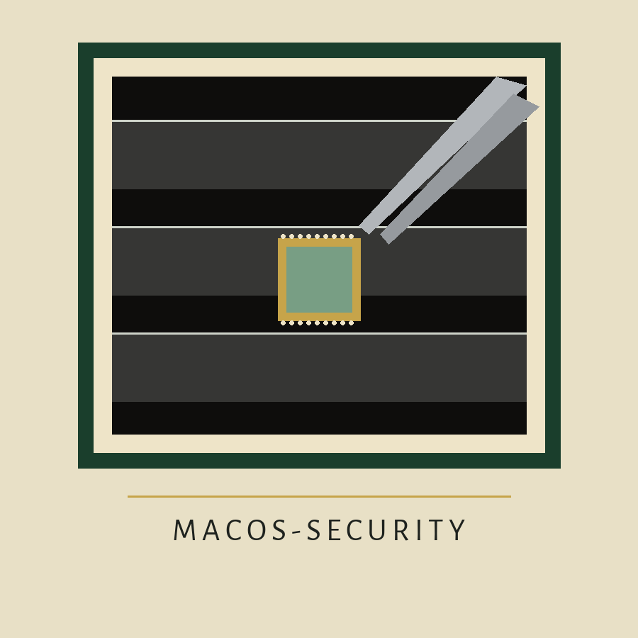
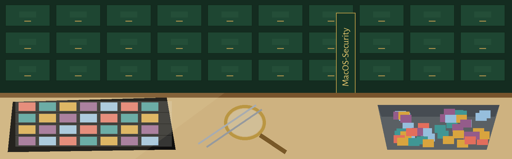

MacOS-Security
Harden macOS.
The Collection
This repo is a gathering of shell scripts and settings that tighten macOS security and privacy. The headline piece is privacy-script.sh, a generated privacy.sexy script. Everything in the collection is presented the way a dealer presents stock: one mounted item at a time, with its condition noted before you handle it.
Source: github.com/Epsilon0xCell/MacOS-Security. Licence: MIT (see the LICENSE file in the repo).
The Warning Leaf
Condition Note: Read This Before You Run privacy-script.sh
privacy-script.sh is a generated privacy.sexy script (v0.13.7). It runs as root: if you start it as a normal user, it starts itself again with administrator privileges and then runs to the end with no prompt, no dry run, and no backup step.
Running it deletes or resets the following, and none of it can be undone from anything in this repo:
- Firefox saved password files:
logins.json,signons.txt,signons2.txt,signons3.txt, andsignons.sqlitein every Firefox profile. Saved Firefox passwords are gone after this runs. - All iOS device backups stored on this Mac, under
~/Library/Application Support/MobileSync/Backup/. - System logs, including everything under
/private/var/log/. - Shell histories for your account, the history files your terminal sessions are saved in.
- Browser histories and cookies, for the browsers the script covers, including Chrome, Safari, and Firefox history, cache, cookies, and download history.
- Every TCC permission grant on the machine. TCC is the system database that records which apps you allowed to use the camera, the microphone, accessibility, screen capture, and the other protected services the script resets, one by one. After this runs, every one of those allow decisions is wiped and apps have to ask again.
The script also clears caches, the Trash, printer job caches, and developer caches, turns several system services off, and turns Spotlight indexing off near the end.
If you need any of the items in the list above, copy them somewhere else before you run this file, or do not run it.
The Hardening Script
privacy-script.sh is published as generated, with its sections labeled in the file itself. That labeling is not a safety pause: by the time a section name prints, that section is already running. Inspect the file first, section by section, the way you would examine each stamp in a row before paying for the page.
File: privacy-script.sh, generated by privacy.sexy, version 0.13.7. It starts itself again with administrator privileges when started as a normal user.
Privacy Choices
The privacy choices in this collection are the resets and clearances listed on the warning leaf: browser history, cache, cookies and download history for Chrome, Safari, and Firefox; shell histories; system logs; and the TCC permission database. Each one is a deletion or a reset, not a toggle you can flip back from inside this repo.
Checking Your Own Machine
Check before and after by the same list: are the Firefox password files still in your profiles, do iOS backups still sit under ~/Library/Application Support/MobileSync/Backup/, do apps still hold the camera and microphone grants you gave them, and is Spotlight indexing still on. After the script runs, apps asking again for camera, microphone, accessibility, and screen capture is the expected sign that the TCC reset happened.
Undoing a Change
There is no undo step in this repo. Deleted password files, backups, logs, and histories cannot be restored from anything here, and TCC grants are re-made only by allowing each app again when it asks. The only reversal this collection offers is the one you prepare yourself: copy anything you need somewhere else before you run the script, or do not run it.
The Sheets
The drawn sheet for this repo lives in the MacOS-Security-Visuals folder.